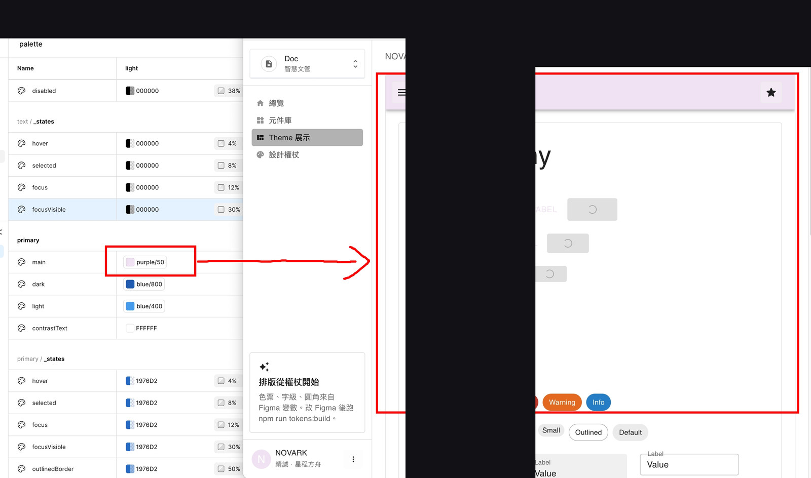
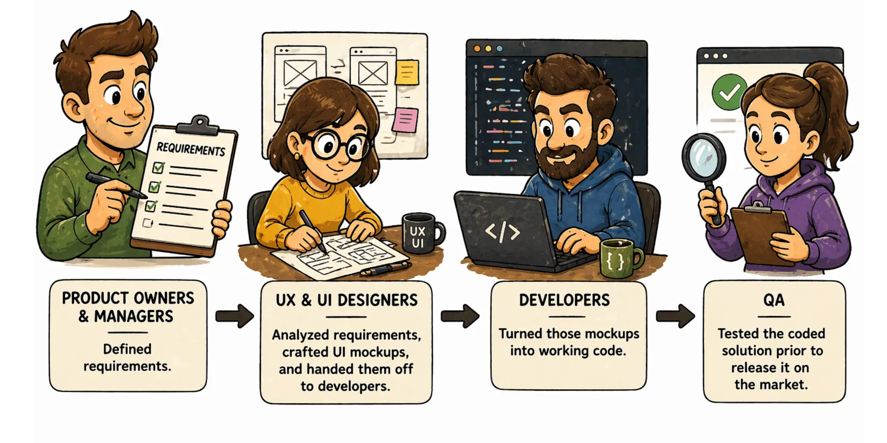
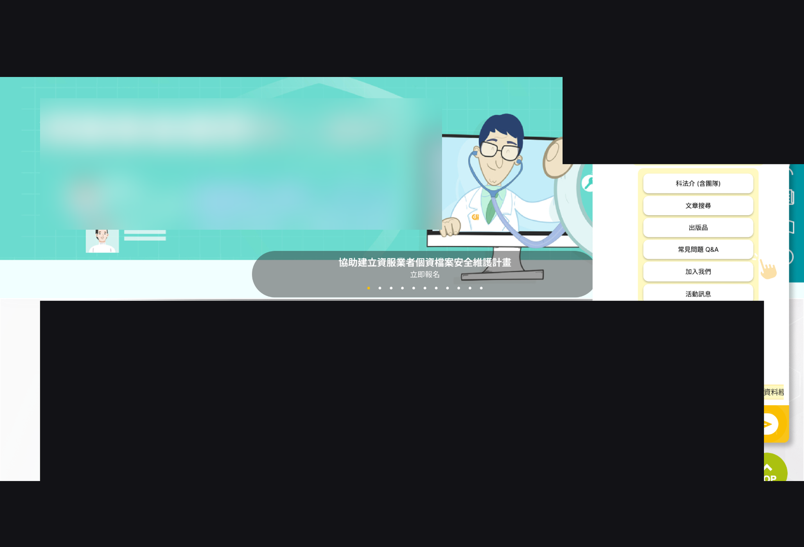

精選專案
從產品化與 AI 介面，到企業級 UI、體驗改版與協作方法。

產品化 UIUX × AI 自動生成介面
主張 AI 生成介面之前，必須先有產品骨架、統一前端底座與 Design System；以 React + MUI 為基礎建立可被 AI 理解的產品規範，形成「可理解→可生成→可…
查看案例
ESG 活動數據填寫：人性化 AI 設計
針對企業 ESG 活動數據登錄，提出「AI 融入介面」的優化設計：使用者整批上傳單據，由 AI 完成 OCR 辨識、類別判斷與欄位填寫；介面…
查看案例
AI Vibe Coding 協作：誰來確保 UI「好用、可維護、可落地」
探討 Vibe Coding 讓 AI 快速產出可操作 UI 的價值與風險：當 Prototype 被當成 Design Spec，體驗與一致性會被鎖死；提出以 Design S…
查看案例
資安資產清單與弱點修補管理平台
為滿足資安法、金融／上市櫃監管與 ISO 27001 對資產清單與弱點修補的稽核要求，設計資產 IP 檢視、弱點狀態分流與修補紀錄等產品能力，並涵蓋 Agent 自動更新與已刪除…
查看案例
Design AI 心得：從單頁生成到企業環境整合
分享使用設計／程式 AI（含單頁設計、畫布、程式代理）的實作心得，並指出 AI 能寫功能卻難快速整合各企業異質環境與 Domain Know-how——需要產品策略上的深度整合，…
查看案例智能維運產品市場研究：AIOps 競品旅程與零信任脈絡
以企業數位轉型與政府資安／零信任補助為背景，完成地端 AIOps 競品盤點與用戶旅程拆解，並收斂智能維運產品規劃與視覺識別方向（公開文案已去除真實產品與雇主品牌名）。
查看案例
多市場儲值體驗改版：假設驅動的設計追蹤與迭代
以假設（hypothesis）驅動儲值體驗改版：建立功能上線紀錄與追蹤計畫、埋設 GA／datalayer 區分新舊用戶，並用監控數據迭代教學影片、再試一次、快速標籤等功能；同時…
查看案例
研究機構官網改版：快捷列、視覺層級與專業團隊頁
針對研究機構官網提出一系列介面改版：右側快捷功能收合與造型、助手入口擴充、分享列視覺層級（主／輔操作色階）、友善列印強調，以及專業團隊頁兩套 Style（Tab 切換部門、Hov…
查看案例
需求歪樓：PM 聽到的 vs 設計聽到的
透過五則真實需求誤讀案例，說明 PM 與設計師對同一句 User 反饋可能走向完全不同解法，主張 PM 應帶設計師進場、只傳達需求不預設設計方向。
查看案例